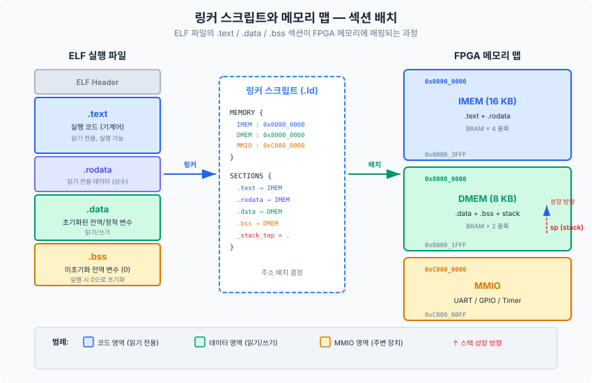
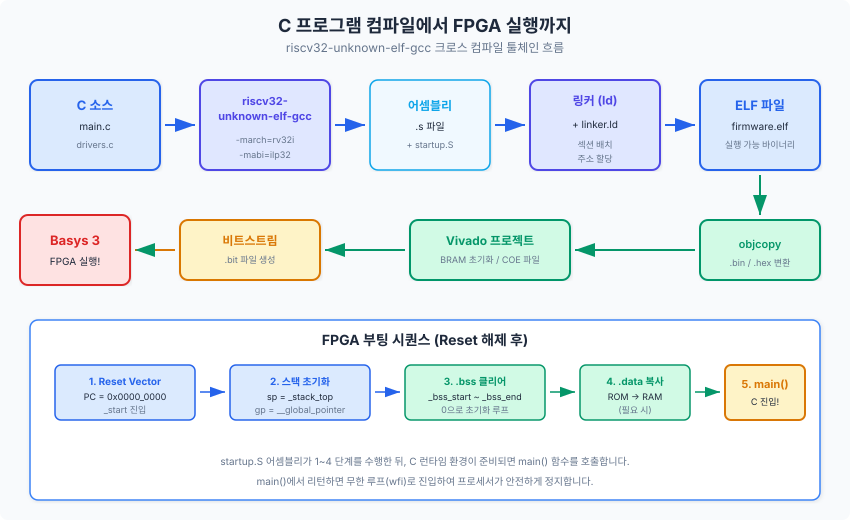
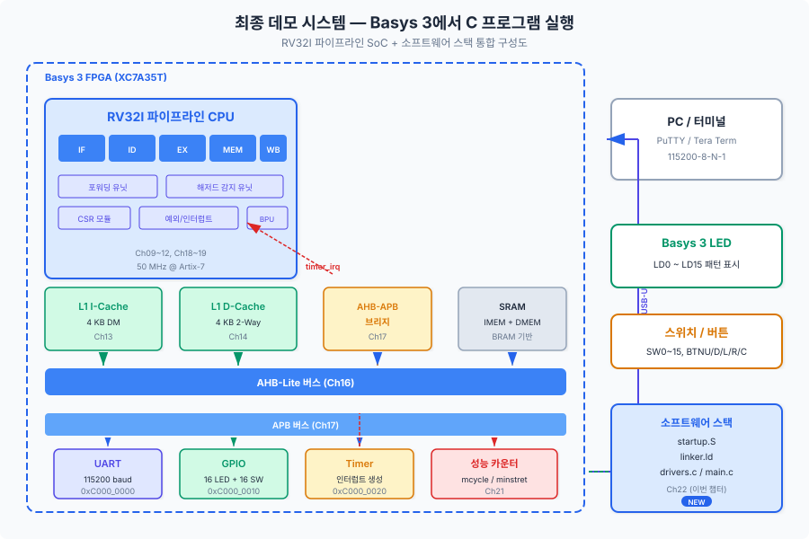

지금까지 우리는 하드웨어의 세계에서 프로세서를 설계하고, 버스를 연결하고, 주변 장치를 통합해 왔습니다. 이제 마지막 관문이 남아 있습니다. 바로 소프트웨어입니다. 이 챕터에서는 C 언어로 작성한 프로그램이 우리가 만든 RISC-V 프로세서 위에서 실행되는 전 과정을 완성합니다. 링커 스크립트로 메모리를 배치하고, 스타트업 코드로 C 런타임을 초기화하며, 드라이버를 작성하여 UART와 GPIO와 타이머를 제어합니다. 최종적으로 Basys 3 보드에서 C 프로그램이 동작하는 순간, 이 교재의 여정이 완성됩니다.
22.1 링커 스크립트와 메모리 맵
Chapter 05에서 우리는 하드웨어 관점에서 메모리 맵을 설계하였습니다. IMEM은 0x0000_0000부터, DMEM은 0x8000_0000부터, MMIO는 0xC000_0000부터 시작하는 주소 공간을 정의했습니다. 그런데 여기서 한 가지 질문이 생깁니다. C 컴파일러가 생성한 기계어 코드와 전역 변수는 이 주소 공간의 어디에 배치되어야 할까요? 이 질문에 대한 답을 제공하는 것이 바로 링커 스크립트(Linker Script)입니다.
비유: 링커 스크립트는 건물의 "층별 안내도"와 같습니다. 건물(메모리)에 어떤 시설(코드, 데이터)을 어느 층(주소)에 배치할지를 결정합니다. 1층(IMEM)에는 안내 데스크(코드)를, 2층(DMEM)에는 사무실(데이터)을, 3층(MMIO)에는 기계실(주변 장치)을 배치하는 식입니다.
ELF 파일의 섹션 구조
C 컴파일러가 소스 코드를 컴파일하면 ELF(Executable and Linkable Format) 형식의 오브젝트 파일을 생성합니다. ELF 파일 내부에는 여러 개의 섹션(Section)이 존재하며, 각 섹션은 서로 다른 성격의 데이터를 담고 있습니다.
섹션
내용
특성
배치 대상
.text
실행 가능한 기계어 코드
읽기 전용, 실행 가능
IMEM
.rodata
읽기 전용 데이터 (문자열 리터럴, const 변수)
읽기 전용
IMEM
.data
초기화된 전역/정적 변수
읽기/쓰기
DMEM
.bss
미초기화 전역/정적 변수 (0으로 초기화)
읽기/쓰기
DMEM
여기서 중요한 점은 .rodata 섹션의 배치입니다. 문자열 리터럴("Hello RISC-V!")이나 const 변수는 실행 중에 변경되지 않으므로, 읽기 전용인 IMEM에 함께 배치하는 것이 DMEM 공간을 절약하는 전략입니다. 우리 SoC에서 DMEM은 8KB뿐이므로, 이 전략은 실질적으로 중요합니다.

그림 22.1: ELF 파일의 섹션이 링커 스크립트를 통해 FPGA 메모리 맵에 배치되는 과정. .text와 .rodata는 IMEM(0x0000_0000)에, .data와 .bss는 DMEM(0x8000_0000)에 배치됩니다.
링커 스크립트 작성
링커 스크립트는 GNU 링커(ld)가 읽는 텍스트 파일로, 확장자는 보통 .ld입니다. 크게 두 블록으로 구성됩니다. MEMORY 블록은 물리적 메모리 영역의 시작 주소와 크기를 정의하고, SECTIONS 블록은 각 ELF 섹션을 어느 메모리 영역에 배치할지를 지정합니다.
1. ENTRY(_start): 프로그램의 진입점(Entry Point)을 _start 레이블로 지정합니다. 이 레이블은 스타트업 어셈블리 코드(22.2절)에서 정의합니다. 리셋 후 프로세서의 PC가 0x0000_0000을 가리키므로, _start는 IMEM의 첫 번째 주소에 배치되어야 합니다.
2. > DMEM AT > IMEM: 이 구문은 .data 섹션의 핵심입니다. VMA(Virtual Memory Address)는 DMEM(실행 시 접근 주소), LMA(Load Memory Address)는 IMEM(초기값 저장 위치)으로 지정합니다. FPGA가 전원을 켤 때 BRAM에 로드되는 비트스트림에는 IMEM 내용만 포함되므로, .data의 초기값은 IMEM에 저장하고, 스타트업 코드가 이를 DMEM으로 복사합니다.
3. _bss_start, _bss_end, _stack_top: 이 심볼들은 링커가 생성하는 주소 상수입니다. 스타트업 코드에서 .bss 영역을 0으로 초기화하거나, 스택 포인터를 설정할 때 사용합니다. C 코드에서도 extern으로 선언하여 참조할 수 있습니다.
스타트업 코드: C 이전의 세계
C 프로그램에서 main() 함수를 호출하려면, 먼저 C 런타임 환경(C Runtime Environment)이 준비되어야 합니다. 스택 포인터가 유효한 메모리를 가리켜야 하고, 전역 변수는 올바른 초기값을 가져야 합니다. 이 초기화 작업은 C 이전에 실행되는 어셈블리 스타트업 코드가 담당합니다.
# ch22_startup.S — RV32I 스타트업 코드
.section .text.startup, "ax", @progbits
.globl _start
_start:
# 1. 인터럽트 비활성화
csrw mie, zero
# 2. 스택 포인터(sp) 초기화
la sp, _stack_top
# 3. 글로벌 포인터(gp) 초기화
.option push
.option norelax
la gp, __global_pointer$
.option pop
# 4. .bss 섹션 제로 클리어
la t0, _bss_start
la t1, _bss_end
bss_clear_loop:
bge t0, t1, bss_clear_done
sw zero, 0(t0)
addi t0, t0, 4
j bss_clear_loop
bss_clear_done:
# 5. .data 섹션 복사 (IMEM → DMEM)
la t0, _data_load # LMA (IMEM 내 위치)
la t1, _data_start # VMA (DMEM 내 위치)
la t2, _data_end
data_copy_loop:
bge t1, t2, data_copy_done
lw t3, 0(t0)
sw t3, 0(t1)
addi t0, t0, 4
addi t1, t1, 4
j data_copy_loop
data_copy_done:
# 6. 트랩 핸들러 설정
la t0, _trap_handler
csrw mtvec, t0
# 7. main() 호출
call main
# 8. main() 복귀 후 무한 대기
halt:
wfi
j halt
스타트업 코드의 각 단계를 살펴보겠습니다.
1단계 — 인터럽트 비활성화: 초기화 도중에 인터럽트가 발생하면 스택이 준비되지 않은 상태에서 트랩 핸들러가 호출되어 시스템이 붕괴합니다. csrw mie, zero로 모든 인터럽트를 비활성화한 뒤, main() 내부에서 필요한 시점에 다시 활성화합니다.
2단계 — 스택 초기화: RISC-V의 스택은 높은 주소에서 낮은 주소로 성장합니다. 따라서 스택 포인터(sp, x2)를 DMEM의 최상위 주소(_stack_top = 0x8000_2000)로 설정합니다. 함수가 호출될 때마다 sp는 감소하면서 지역 변수와 복귀 주소를 저장합니다.
3단계 — 글로벌 포인터: RISC-V ABI에서 gp(x3) 레지스터는 .sdata 섹션의 중간을 가리킵니다. 컴파일러는 이를 활용하여 작은 전역 변수에 단일 명령어로 접근할 수 있습니다. .option norelax 지시자는 어셈블러가 gp 자체를 설정하는 명령어를 gp 상대 접근으로 변환하지 못하게 방지합니다.
4단계 — .bss 클리어: C 표준은 미초기화 전역 변수가 0으로 시작할 것을 보장합니다. 스타트업 코드가 _bss_start부터 _bss_end까지를 0으로 채워 이 약속을 지킵니다.
5단계 — .data 복사: 초기값이 있는 전역 변수(예: int count = 42;)의 초기값은 IMEM(LMA)에 저장되어 있습니다. 이를 실제 실행 주소인 DMEM(VMA)으로 복사합니다.
22.2 C 언어 프로그램 실행
링커 스크립트와 스타트업 코드가 준비되었으니, 이제 본격적으로 C 프로그램을 컴파일하여 우리의 RV32I 프로세서에서 실행해 보겠습니다. 이 과정은 크로스 컴파일(Cross Compilation)이라 합니다. 개발 환경(호스트, Host)은 x86 Windows PC이지만, 생성되는 바이너리는 RV32I 프로세서(타겟, Target)에서 실행되기 때문입니다.
비유: 크로스 컴파일은 한국에서 미국 법률 문서를 작성하는 것과 같습니다. 작성자(호스트)는 한국에 있지만, 문서(바이너리)는 미국 법원(타겟 프로세서)에서 사용됩니다. 따라서 미국 법률 체계(RV32I ISA)에 맞게 작성해야 합니다.
RISC-V GNU 툴체인
RISC-V 크로스 컴파일에는 riscv-gnu-toolchain을 사용합니다. 이 툴체인은 다음 도구를 포함합니다.
도구
역할
명령어 예시
riscv32-unknown-elf-gcc
C 컴파일러
gcc -march=rv32i -mabi=ilp32 -c main.c
riscv32-unknown-elf-as
어셈블러
as -march=rv32i startup.S
riscv32-unknown-elf-ld
링커
ld -T linker.ld -o firmware.elf
riscv32-unknown-elf-objcopy
바이너리 변환
objcopy -O verilog firmware.elf firmware.hex
riscv32-unknown-elf-objdump
디스어셈블리
objdump -d firmware.elf

그림 22.2: C 소스 코드가 컴파일, 링크, 바이너리 변환을 거쳐 FPGA에서 실행되기까지의 전체 흐름. 최종 산출물인 .hex 파일이 Vivado를 통해 BRAM에 로드됩니다.
컴파일 옵션 상세
우리 프로세서는 RV32I 기본 정수 명령어 세트만 구현하므로, 컴파일 옵션을 정확히 지정해야 합니다. 잘못된 옵션은 프로세서가 지원하지 않는 명령어(예: 곱셈 MUL)를 생성하여 Illegal Instruction 예외를 발생시킵니다.
riscv32-unknown-elf-gcc \
-march=rv32i \ # 타겟 ISA: RV32I (곱셈/부동소수점 없음)
-mabi=ilp32 \ # ABI: int=32, long=32, pointer=32
-Os \ # 코드 크기 최적화 (IMEM 16KB 제약)
-ffreestanding \ # OS 없는 독립 실행 환경
-nostdlib \ # 표준 라이브러리 링크 안 함
-nostartfiles \ # 기본 스타트업 파일 사용 안 함
-fno-builtin \ # 내장 함수 비활성화 (직접 구현)
-c main.c -o main.o
핵심 옵션 설명:
-march=rv32i: 이 옵션은 컴파일러에게 RV32I 명령어만 사용하라고 지시합니다. -march=rv32im으로 지정하면 곱셈(M 확장) 명령어가 생성되는데, 우리 프로세서는 이를 지원하지 않으므로 반드시 rv32i를 사용해야 합니다.
-Os: 코드 크기 최적화입니다. IMEM이 16KB로 제한되어 있으므로, -O2(속도 최적화)보다 -Os(크기 최적화)가 적합합니다. -Os는 -O2 수준의 최적화를 적용하되, 코드 크기를 증가시키는 변환(루프 풀기 등)은 수행하지 않습니다.
-ffreestanding과 -nostdlib: 우리 환경에는 운영 체제가 없으므로, printf, malloc 같은 표준 라이브러리 함수를 사용할 수 없습니다. 이 옵션들은 컴파일러에게 "베어메탈(bare-metal) 환경"임을 알립니다. 필요한 함수(예: uart_printf)는 우리가 직접 구현합니다(22.3절).
Makefile 기반 빌드 시스템
매번 긴 컴파일 명령어를 입력하는 것은 비효율적입니다. Makefile을 작성하여 빌드 과정을 자동화합니다.
make 명령 한 번으로 컴파일, 링크, HEX 변환이 모두 수행됩니다. 생성된 firmware.hex 파일은 Vivado에서 BRAM 초기화 파일로 사용하거나, 시뮬레이션의 $readmemh에 전달합니다.
빌드 결과 검증: objdump 분석
컴파일된 바이너리가 의도대로 생성되었는지 확인하는 것은 중요합니다. objdump -d firmware.elf 명령으로 디스어셈블리를 확인합니다.
firmware.elf: file format elf32-littleriscv
Disassembly of section .text:
00000000 <_start>:
0: 30001073 csrw mie,zero
4: 80002137 lui sp,0x80002
8: ...
00000048 <main>:
48: fe010113 addi sp,sp,-32
4c: 00112e23 sw ra,28(sp)
50: ... # main() 함수 본문
확인해야 할 사항은 세 가지입니다. 첫째, _start가 주소 0x00000000에 위치하는지 확인합니다. 리셋 벡터(Reset Vector)가 이 주소를 가리키므로, 이곳에 스타트업 코드가 있어야 합니다. 둘째, main()이 IMEM 범위(0x0000_0000 ~ 0x0000_3FFF) 내에 있는지 확인합니다. 셋째, M 확장 명령어(mul, div)가 포함되지 않았는지 확인합니다.
22.3 주변 장치 드라이버 작성
C 프로그램이 실행될 수 있는 환경을 갖추었으니, 이제 프로세서와 외부 세계를 연결할 차례입니다. Chapter 17에서 설계한 UART, GPIO, 타이머 하드웨어를 C 코드에서 제어하려면, 장치 드라이버(Device Driver)가 필요합니다. 임베디드 시스템에서 드라이버는 하드웨어 레지스터를 읽고 쓰는 얇은 소프트웨어 계층(thin software layer)입니다.
비유: 드라이버는 자동차의 "운전대"와 같습니다. 운전자(C 프로그램)는 운전대(드라이버 API)만 조작하면 되고, 그 아래의 조향 기어와 바퀴(하드웨어 레지스터)가 어떻게 동작하는지 알 필요가 없습니다. uart_puts("Hello")를 호출하면, 드라이버가 알아서 TX FIFO를 확인하고 한 글자씩 전송합니다.
MMIO 접근 원리
우리 SoC에서 주변 장치 레지스터는 MMIO(Memory-Mapped I/O) 방식으로 접근합니다. 이는 주변 장치의 제어 레지스터가 메모리 주소 공간에 매핑되어 있어, 일반적인 Load/Store 명령어로 접근할 수 있다는 의미입니다. 예를 들어, UART의 송신 데이터 레지스터(TXDATA)는 주소 0xC000_0000에 위치하므로, sw a0, 0(t0) 명령어로 데이터를 기록할 수 있습니다.
volatile은 컴파일러에게 "이 변수에 대한 접근을 최적화하지 마라"고 지시합니다. 왜 필요할까요? 컴파일러는 일반적으로 동일 주소를 반복 읽을 때 캐시된 값을 재사용하려 합니다. 그러나 하드웨어 레지스터는 외부 이벤트에 의해 값이 변할 수 있으므로, 매번 실제 메모리(MMIO 주소)에서 읽어야 합니다. volatile이 없으면 컴파일러가 상태 레지스터 읽기를 루프 밖으로 끌어내어 무한 루프에 빠질 수 있습니다.
그림 22.3: 드라이버 소프트웨어 아키텍처. C 응용 프로그램은 드라이버 API를 호출하고, 드라이버는 volatile 포인터를 통해 MMIO 레지스터에 접근하며, APB 버스를 거쳐 하드웨어에 도달합니다.
UART 드라이버: printf 없이 문자를 보내다
UART(Universal Asynchronous Receiver/Transmitter) 드라이버는 가장 중요한 드라이버입니다. 디버깅 메시지를 PC 터미널로 출력할 수 있기 때문입니다. Chapter 17.3에서 설계한 UART 하드웨어는 다음 레지스터를 제공합니다.
레지스터
오프셋
설명
TXDATA
+0x00
송신 데이터 (쓰기 시 TX FIFO에 삽입)
RXDATA
+0x04
수신 데이터 (읽기 시 RX FIFO에서 추출)
STATUS
+0x08
상태 (bit 0: TX_FULL, bit 1: RX_EMPTY)
CTRL
+0x0C
제어 (bit 0: TX_EN, bit 1: RX_EN)
/* uart_putc: 단일 문자 전송 */
void uart_putc(char c)
{
/* TX FIFO가 비워질 때까지 폴링 대기 */
while (UART_STATUS & UART_TX_FULL)
; /* busy-wait */
UART_TXDATA = (uint32_t)c;
}
/* uart_puts: 문자열 전송 (\n → \r\n 변환) */
void uart_puts(const char *s)
{
while (*s) {
if (*s == '\n')
uart_putc('\r');
uart_putc(*s);
s++;
}
}
uart_putc()의 동작 원리는 단순합니다. 먼저 STATUS 레지스터의 TX_FULL 비트를 확인합니다. TX FIFO가 가득 차 있으면 빈 공간이 생길 때까지 반복 확인합니다(폴링, polling). FIFO에 공간이 생기면 TXDATA 레지스터에 문자를 기록합니다. 하드웨어는 자동으로 FIFO에서 데이터를 꺼내 시리얼 라인으로 전송합니다.
간이 printf 구현
표준 printf() 함수는 수천 줄의 코드로 구성되어 IMEM 16KB에 수용할 수 없습니다. 대신 필수 형식 지정자만 지원하는 간이 uart_printf()를 구현합니다.
/* uart_printf: 간이 printf (%d, %u, %x, %s, %c 지원) */
int uart_printf(const char *fmt, ...)
{
va_list args;
va_start(args, fmt);
int count = 0;
while (*fmt) {
if (*fmt == '%') {
fmt++;
switch (*fmt) {
case 'd': {
int val = va_arg(args, int);
if (val < 0) { uart_putc('-'); val = -val; }
char buf[12];
int idx = 0;
if (val == 0) buf[idx++] = '0';
else while (val > 0) {
buf[idx++] = '0' + (val % 10);
val /= 10;
}
for (int i = idx-1; i >= 0; i--)
uart_putc(buf[i]);
break;
}
case 'x': uart_put_hex(va_arg(args, uint32_t)); break;
case 's': uart_puts(va_arg(args, const char *)); break;
case 'c': uart_putc((char)va_arg(args, int)); break;
default: uart_putc(*fmt); break;
}
} else {
if (*fmt == '\n') uart_putc('\r');
uart_putc(*fmt);
}
fmt++;
count++;
}
va_end(args);
return count;
}
이 구현에서 %d 처리가 흥미롭습니다. 정수를 10진수 문자열로 변환하려면 나눗셈이 필요한데, 우리 프로세서는 M 확장이 없어 div 명령어를 지원하지 않습니다. 그러나 걱정할 필요 없습니다. 컴파일러가 val / 10과 val % 10을 시프트와 덧셈의 조합으로 자동 변환합니다(소프트웨어 나눗셈). 코드 크기가 다소 증가하지만, 정상적으로 동작합니다.
GPIO 드라이버: LED와 스위치 제어
GPIO(General-Purpose Input/Output) 드라이버는 Basys 3 보드의 16개 LED와 16개 슬라이드 스위치를 제어합니다.
GPIO 드라이버는 UART보다 훨씬 단순합니다. 방향 레지스터(DIR)로 각 핀의 입출력 방향을 설정하고, 출력 레지스터(OUT)에 값을 쓰면 LED가 켜지거나 꺼지며, 입력 레지스터(IN)를 읽으면 스위치 상태가 반환됩니다.
타이머 드라이버: 인터럽트의 시작
타이머 드라이버는 앞의 두 드라이버와 본질적으로 다릅니다. UART와 GPIO는 폴링(Polling) 방식으로 동작하지만, 타이머는 인터럽트(Interrupt) 방식으로 동작합니다. 타이머 카운터가 비교 값(Compare Value)에 도달하면 인터럽트 신호를 생성하고, 프로세서는 현재 실행을 중단한 뒤 인터럽트 서비스 루틴(ISR, Interrupt Service Routine)을 실행합니다.
여기서 timer_tick_count가 volatile로 선언된 점에 주목하십시오. 이 변수는 ISR(인터럽트 컨텍스트)에서 수정되고, main()(정상 컨텍스트)에서 읽힙니다. volatile이 없으면 컴파일러가 main()에서 이 변수를 레지스터에 캐싱하여, ISR에서의 변경을 감지하지 못합니다.
22.4 최종 데모: Basys 3에서 C 프로그램 실행
이제 모든 퍼즐 조각이 모였습니다. 링커 스크립트, 스타트업 코드, 드라이버, 그리고 Chapter 09부터 21까지 설계한 하드웨어 — 파이프라인 CPU, 캐시, AHB/APB 버스, 주변 장치. 이 모든 것을 하나로 통합하여 Basys 3 보드에서 C 프로그램을 실행하는 것이 이 교재의 최종 마일스톤입니다.
비유: 이 순간은 로켓 발사의 카운트다운과 같습니다. 21개 챕터에 걸쳐 엔진(CPU), 연료 탱크(메모리), 제어 시스템(인터럽트), 통신 장비(UART)를 각각 설계하고 검증했습니다. 이제 모든 부품을 조립하고 점화 버튼(리셋 해제)을 누르면, 로켓이 하늘로 날아오릅니다. 여러분이 만든 프로세서가 C 프로그램을 실행하는 순간입니다.

그림 22.4: 최종 데모 시스템 구성도. RV32I 파이프라인 CPU, 캐시, AMBA 버스, 주변 장치가 하드웨어를 구성하고, 소프트웨어 스택(startup.S, linker.ld, drivers.c, main.c)이 그 위에서 동작합니다.
데모 시나리오
최종 데모 프로그램은 다섯 가지 시나리오를 순차적으로 실행합니다. 각 시나리오는 이전 챕터에서 구현한 하드웨어 기능을 소프트웨어로 검증하는 역할을 합니다.
데모
시나리오
검증 대상
1
UART "Hello RISC-V!" 출력
UART TX, APB 버스, MMIO 접근
2
LED 나이트 라이더 패턴
GPIO 출력, 소프트웨어 타이밍
3
스위치 → LED 미러링
GPIO 입력/출력, 실시간 반응
4
타이머 인터럽트 하트비트
타이머 HW, 인터럽트 처리, CSR, 트랩 핸들러
5
시스템 상태 리포트
uart_printf, 스택 포인터 확인, 전체 통합
데모 프로그램: main.c
/* ch22_main.c — 최종 데모 프로그램 (핵심 부분) */
#include "ch22_drivers.h"
#define TIMER_1MS 50000U /* 50MHz 기준 1ms */
int main(void)
{
/* 1. 주변 장치 초기화 */
uart_init();
gpio_init();
timer_init(TIMER_1MS);
/* 2. UART 인사 메시지 */
uart_puts("Hello from RISC-V on Basys 3!\n");
uart_printf("[INFO] Clock: %u Hz\n", 50000000U);
/* 3. LED 나이트 라이더 (좌우 이동) */
for (int round = 0; round < 3; round++) {
for (int i = 0; i < 16; i++) {
gpio_write(1U << i);
delay_ms(100);
}
for (int i = 14; i > 0; i--) {
gpio_write(1U << i);
delay_ms(100);
}
}
/* 4. 스위치 미러링 (3초) */
uart_puts("[DEMO] Switch mirror (3 sec)\n");
uint32_t start = timer_tick_count;
while ((timer_tick_count - start) < 3000) {
gpio_write((gpio_read() >> 16) & 0xFFFF);
}
/* 5. 타이머 인터럽트 하트비트 (5초) */
timer_start();
enable_global_interrupts();
start = timer_tick_count;
while ((timer_tick_count - start) < 5000) {
if ((timer_tick_count % 500) == 0)
gpio_write(gpio_read() ^ 0x8001);
}
/* 6. 완료 */
gpio_write(0xFFFF); /* 모든 LED 점등 */
uart_puts("All demos completed!\n");
return 0;
}
SoC 최상위 모듈: Basys 3 핀 연결
소프트웨어가 준비되었으면, 이를 실행할 하드웨어 래퍼(wrapper)가 필요합니다. SoC 최상위 모듈은 내부 SoC 신호를 Basys 3 보드의 물리적 핀에 연결합니다.
주목할 점은 클록 분주와 리셋 동기화입니다. Basys 3의 온보드 클록은 100MHz이지만, 우리 SoC의 목표 주파수는 50MHz입니다(Ch20 참조). 간단한 토글 분주기로 클록을 절반으로 낮춥니다. 리셋은 비동기 버튼 입력을 2단계 동기화기(two-stage synchronizer)로 처리하여 메타스테이빌리티(metastability)를 방지합니다.
실행 절차: 빌드에서 보드까지
최종 데모의 실행 절차를 단계별로 정리합니다.
소프트웨어 빌드:make 명령으로 firmware.hex 생성
BRAM 초기화: Vivado 프로젝트에서 IMEM BRAM의 초기화 파일을 firmware.hex로 지정
합성 및 구현: Vivado에서 합성(Synthesis) → 구현(Implementation) → 비트스트림 생성(Generate Bitstream)
프로그래밍: Basys 3 보드를 USB로 연결하고 비트스트림 다운로드
터미널 연결: PuTTY 또는 Tera Term으로 COM 포트 연결 (115200-8-N-1)
리셋: BTNC(중앙 버튼)를 눌렀다 놓으면 프로그램 시작
기대 출력
모든 것이 올바르게 동작하면, PC 터미널에 다음과 같은 출력이 나타납니다.
+--------------------------------------+
| RISC-V Processor Design Book |
| Chapter 22: Final Demo |
| Hello from Basys 3 FPGA! |
+--------------------------------------+
[INFO] System clock: 50000000 Hz
[INFO] UART baud rate: 115200 bps
[INFO] IMEM: 16 KB, DMEM: 8 KB
[DEMO 1] LED Knight Rider pattern...
[DEMO 1] Knight Rider complete.
[DEMO 2] Switch-to-LED mirror (3 sec)...
[DEMO 2] Switch mirror complete.
[DEMO 3] Timer interrupt heartbeat (5 sec)...
[TICK] count = 500, LED = ON
[TICK] count = 1000, LED = OFF
[TICK] count = 1500, LED = ON
...
[DEMO 3] Heartbeat demo complete.
[REPORT] System Status
------------------------
Timer ticks elapsed: 8000
Stack pointer (sp): 0x80001FE0
Switch state: 0x0000
------------------------
========================================
All demos completed successfully!
Your RISC-V SoC is fully operational.
========================================
이 출력의 각 줄은 우리가 21개 챕터에 걸쳐 설계한 하드웨어와 소프트웨어의 협력을 증명합니다. UART 메시지는 APB 버스를 통해 전송되고, LED 패턴은 GPIO 컨트롤러가 구동하며, 타이머 tick은 인터럽트 메커니즘이 동작하고 있음을 보여줍니다. 스택 포인터 값은 C 런타임 환경이 올바르게 초기화되었음을 확인시켜 줍니다.
트러블슈팅 체크리스트
최종 통합에서 문제가 발생하더라도 당황하지 마십시오. 시뮬레이션과 FPGA 실행 사이에 차이가 나는 것은 매우 흔한 일입니다. 다음 체크리스트를 순서대로 확인하십시오.
#
증상
가능한 원인
해결 방법
1
LED가 전혀 동작하지 않음
리셋이 해제되지 않음
리셋 동기화 로직 확인, BTNC 극성 확인
2
LED가 켜진 채 멈춤
프로세서가 예외에 걸려 정지
ILA로 PC 추적, mcause CSR 확인
3
UART 출력 없음
보드레이트 불일치 또는 TX/RX 교차
보드레이트 분주기 계산 재확인
4
UART 깨진 문자 출력
보드레이트 오차 > 3%
분주기 정수 오차 계산, 클록 주파수 확인
5
타이머 인터럽트 미동작
mie/mstatus 설정 누락
mstatus.MIE=1, mie.MTIE=1 확인
6
시뮬레이션 OK, FPGA NG
타이밍 위반 (WNS < 0)
타이밍 리포트 확인, 클록 주파수 하향
22.5 본 챕터 요약 및 다음 단계
이 챕터에서 우리는 하드웨어와 소프트웨어의 경계를 넘어, C 프로그램이 직접 설계한 RISC-V 프로세서 위에서 실행되는 전체 과정을 완성하였습니다. 링커 스크립트로 메모리 맵을 정의하고, 스타트업 어셈블리로 C 런타임을 초기화하며, 주변 장치 드라이버로 외부 세계와 소통하고, 최종적으로 Basys 3 보드에서 실제 동작을 확인하였습니다.
핵심 개념 정리
주제
핵심 내용
링커 스크립트
MEMORY 블록으로 물리적 메모리를 정의하고, SECTIONS 블록으로 ELF 섹션(.text, .data, .bss)을 배치한다. > DMEM AT > IMEM으로 VMA/LMA를 분리한다.
스타트업 코드
C의 main() 이전에 sp 초기화, gp 설정, .bss 클리어, .data 복사, mtvec 설정을 수행한다. 이 코드 없이 C 프로그램은 동작할 수 없다.
volatile 포인터로 하드웨어 레지스터에 접근한다. 폴링(UART, GPIO)과 인터럽트(Timer) 두 가지 방식을 사용한다.
최종 통합
하드웨어(SoC)와 소프트웨어(firmware)를 Basys 3 보드에서 통합 실행한다. 시뮬레이션-FPGA 불일치는 타이밍, 초기화, 비동기 신호 3대 원인을 순서대로 점검한다.
핵심 정리
링커 스크립트는 컴파일된 코드와 데이터가 물리적 메모리의 어느 주소에 배치될지를 결정하는 "메모리 배치 설계도"이다.
스타트업 코드는 C 런타임 환경(스택, 전역 변수, 트랩 핸들러)을 초기화하는 어셈블리 코드로, main() 이전에 반드시 실행되어야 한다.
크로스 컴파일은 호스트(x86 PC)에서 타겟(RV32I)용 바이너리를 생성하는 과정이며, -march와 -mabi 옵션이 타겟 ISA를 결정한다.
MMIO 기반 드라이버에서 volatile 키워드는 컴파일러 최적화로 인한 잘못된 레지스터 접근을 방지하는 필수 요소이다.
폴링(UART, GPIO)과 인터럽트(Timer) 두 가지 I/O 방식의 차이를 이해하고 적절히 선택해야 한다.
시뮬레이션에서 FPGA로의 전환 시 타이밍 위반, 초기화 미비, 비동기 신호 처리가 3대 장애 원인이다.
Basys 3에서 C 프로그램이 실행되는 순간은 ISA 학습(Part 1)부터 시작한 20주 여정의 감정적 클라이맥스이다.
연습문제
[기억] 링커 스크립트에서 MEMORY 블록과 SECTIONS 블록의 역할을 각각 설명하시오.
[이해].data 섹션에 > DMEM AT > IMEM을 지정하는 이유를 VMA와 LMA 개념을 사용하여 설명하시오. 스타트업 코드의 어느 단계와 연관되는가?
[적용] 현재 간이 uart_printf()는 %d, %u, %x, %s, %c를 지원한다. 여기에 %b(2진수 출력) 형식 지정자를 추가 구현하시오.
[적용] Basys 3의 7-세그먼트 디스플레이에 timer_tick_count 값을 16진수로 표시하는 드라이버를 작성하시오. MMIO 주소는 0xC000_0030에 SEG_DATA, 0xC000_0034에 SEG_CTRL 레지스터를 가정하시오.
[분석] 현재 데모 프로그램의 코드 크기를 riscv32-unknown-elf-size로 측정하시오. IMEM 16KB 제약 하에서 추가할 수 있는 기능의 한계를 분석하시오. 코드 크기를 줄이기 위한 전략 세 가지를 제안하시오.
[분석]uart_putc()의 폴링 대기 루프에 타임아웃(timeout)을 추가하시오. 타임아웃 시 에러 코드를 반환하도록 함수 시그니처를 변경하고, 호출자 코드도 수정하시오.
[평가] 현재 타이머 ISR은 단순히 timer_tick_count를 증가시킨다. 만약 ISR 내부에서 uart_printf()를 호출한다면 어떤 문제가 발생할 수 있는지 분석하시오. ISR 작성 시의 일반적 규칙을 세 가지 제시하시오.
[평가] 폴링 방식의 UART와 인터럽트 방식의 UART를 비교하시오. 각 방식의 장단점과 적합한 사용 시나리오를 설명하시오. 우리 SoC에서 인터럽트 방식 UART를 구현하려면 하드웨어와 소프트웨어에 각각 어떤 수정이 필요한가?
전체 여정 회고
축하합니다. Chapter 01에서 LED를 깜빡이던 시절부터 이곳까지, 긴 여정을 완주하셨습니다.
돌이켜보면, 이 여정은 다섯 개의 봉우리를 넘는 산행이었습니다. Part 1~2에서 ISA를 이해하고 단일 사이클 CPU로 피보나치를 실행했을 때(첫 번째 봉우리), Part 3~4에서 파이프라인 해저드와 씨름하며 버블정렬을 FPGA에서 돌렸을 때(두 번째 봉우리), Part 5~6에서 캐시와 AMBA 버스로 "Hello RISC-V"를 전송했을 때(세 번째 봉우리), Part 7에서 인터럽트와 CSR을 파이프라인에 통합했을 때(네 번째 봉우리), 그리고 지금 Part 8에서 C 프로그램이 자신이 만든 프로세서 위에서 실행되는 것을 확인한 이 순간(다섯 번째 봉우리).
이제 여러분은 RISC-V RV32I 파이프라인 프로세서를 설계하고 FPGA에 구현할 수 있는 엔지니어입니다. ISA 스펙을 읽고 하드웨어로 구현할 수 있으며, 그 위에서 소프트웨어를 실행할 수 있습니다. 이것은 컴퓨터 구조의 핵심을 손끝으로 이해한 것입니다.
Part 9(Chapter 23~25)에서는 슈퍼스칼라, M/F 확장, 멀티코어 등 심화 주제를 선택적으로 탐구합니다. 또는 자신만의 확장 프로세서를 설계하여 "창조" 단계로 나아갈 수도 있습니다. 어느 길을 선택하든, 이 교재에서 쌓은 기초는 여러분의 든든한 발판이 될 것입니다.